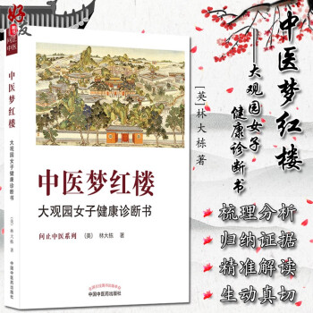

中醫夢紅樓：大觀園女子健康診斷書

《中醫夢紅樓：大觀園女子健康診斷書》是全國百佳圖書出版單位中國中醫藥出版社出版的中醫養生書籍。作者是問止中醫聯合創始人林大棟博士，林大棟博士在《中醫夢紅樓：大觀園女子健康診斷書》一書中分析十二位佳人身心特點時，提煉十二佳人的生理、心力、情商、智商及生活環境入手，以中醫理論為主，輔以傳統文化修心養性之學問，雜以江湖人情世故，讀之不惟明了強身益壽之本源，更可提升心性，練達世事。
現代社會，生活的高壓、利益的爭斗，新時代的金釵們身處其中，壓力可想而知，如何保持身心健康，游刃濁世而不染，不妨多讀此書。
授人魚不如授人以漁，《中醫夢紅樓：大觀園女子健康診斷書》一書不僅對十二金釵的體質結合原文進行了客觀、細致的剖析，更有針對性的提出了不同體質的養生保健之法。
當今都市，其陰暗處有甚於紅樓這多矣，現代的十二金釵們身處現代都市，壓力不可謂不大，學點中醫養生健康知識其實是非常必要的。《中醫夢紅樓：大觀園女子健康診斷書》從提煉十二佳人的生理、心理、情商、智商及生活環境入手，深刻分析其悲劇人生之根源，借古喻今，以為當世精英女性之圖鑑，不僅是一本健康養生科普書，更是一本借紅樓十二金釵的故事獲得世事練達通名之智慧的提升心性收獲健康的傳統文化經典品讀書籍，現代女性們不妨一讀！
|